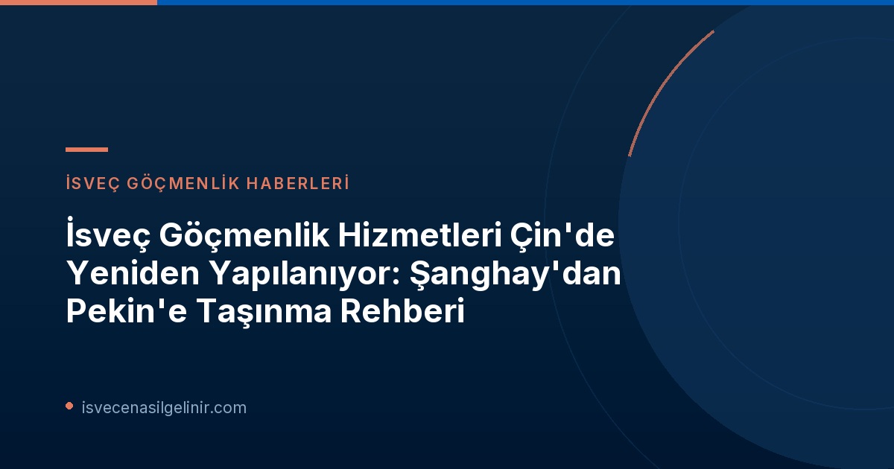

İsveç Göçmenlik Faaliyetleri Neden Pekin'e Taşınıyor?
Migrationsverket'in Çin'deki göçmenlik operasyonlarını Şanghay'dan Pekin'e taşıma kararı, genellikle idari verimlilik, merkeziyetçilik ve diplomatik temsilin güçlendirilmesi gibi faktörlere dayanır. Büyükelçilikler, genellikle bir ülkedeki tüm diplomatik ve konsolosluk işlemlerinin ana merkezi konumundadır. Bu tür bir hareket, İsveç'in Çin'deki resmi temsilinin tek bir çatı altında toplanarak, göçmenlik süreçlerinin daha entegre ve yönetilebilir olmasını sağlamayı hedefleyebilir. Bu değişiklik, İsveç'in küresel göçmenlik politikaları doğrultusunda hizmet kalitesini artırma ve başvuru süreçlerini daha şeffaf hale getirme çabasının bir parçası olarak da görülebilir.
Migrationsverket'in Çin Operasyonlarındaki Yeniden Yapılanmanın Detayları
Bu yeniden yapılanma, Çin'deki İsveç vize ve ikamet izni başvuru süreçlerinde önemli değişiklikleri beraberinde getiriyor. Başvuru sahiplerinin mağdur olmaması veya süreçlerde herhangi bir aksaklık yaşamaması için belirlenen tarihlere ve yeni prosedürlere dikkat etmesi büyük önem taşımaktadır.
Önemli Tarihler ve Uygulama Takvimi
Aşağıdaki tablo, Migrationsverket'in Çin'deki operasyonlarının Şanghay'dan Pekin'e taşınmasına ilişkin kilit tarihleri ve bu tarihlerde yürürlüğe girecek değişiklikleri özetlemektedir:
| Tarih | Değişiklik/Uygulama |
|---|---|
| 1 Ekim 2026 | Pekin Büyükelçiliği, Şanghay Generalkonsolosluğu'na bağlı olan mevcut üç Vize Başvuru Merkezi'nin (VAC) vize başvurularını devralır. Bu tarihten itibaren Şanghay Generalkonsolosluğu, yeni vize başvurusu kabul etmeyecektir. |
| 1 Kasım 2026 | Pekin Büyükelçiliği, Çin'de ikamet eden kişilerin tüm göçmenlik davalarındaki incelemeler ve diğer görevleri devralır. Tüm diğer göçmenlik evrakları ve yazışmaları da bu tarihten itibaren doğrudan Pekin Büyükelçiliği'ne gönderilmelidir. |
| 1 Ocak 2027 | Pekin Büyükelçiliği, Çin'deki tüm İsveç göçmenlik faaliyetlerini tamamen yönetecektir. Şanghay Generalkonsolosluğu, bu tarihten sonra hiçbir göçmenlik davası veya işlemi yürütmeyecektir. |
Vize Başvuruları Nasıl Etkilenecek?
1 Ekim 2026 tarihinden itibaren Çin'deki İsveç vize başvuruları için Şanghay Generalkonsolosluğu yerine Pekin Büyükelçiliği yetkili olacaktır. Başvuru sahipleri, başvurularını eskiden olduğu gibi Vize Başvuru Merkezleri (VAC) aracılığıyla yapmaya devam edeceklerdir ancak bu merkezlerin arka plandaki bağlayıcılığı Pekin Büyükelçiliği'ne geçecektir. Dolayısıyla, vize başvurusu yapmayı düşünenlerin, bu tarihten sonraki tüm süreçler için Pekin Büyükelçiliği'nin güncel yönergelerini takip etmeleri gerekmektedir.
İkamet İzni ve Diğer Göçmenlik Süreçleri
İkamet izni başvuruları, vatandaşlık işlemleri gibi diğer tüm göçmenlik davaları ve araştırmaları da 1 Kasım 2026 itibarıyla Pekin Büyükelçiliği tarafından yürütülecektir. Çin'de yaşayan ve bu türden bir göçmenlik süreci içinde olan kişilerin, evraklarını ve her türlü yazışmalarını bu tarihten itibaren Pekin Büyükelçiliği'ne yönlendirmesi gerekmektedir. Şanghay'daki Generalkonsolosluk, belirtilen tarihten sonra artık bu türden dosyaları kabul etmeyecektir.
Önemli Bilgi: İsveç Vatandaşlık Sınavı
İsveç'te uzun süreli ikamet eden ve gelecekte İsveç vatandaşlığına başvurmayı düşünen kişiler için İsveç Vatandaşlık Sınavı büyük önem taşımaktadır. Vatandaşlık testine dair güncel bilgilere, hazırlık materyallerine ve sınav yapısına dair detaylı rehberlere sverigemedborgarskapsprov.com adresinden ulaşarak sürecinize destek olabilirsiniz.
Evrak Teslimi ve İletişim Kanalları
Bu geçiş dönemi boyunca, başvuru sahiplerinin Migrationsverket'in resmi internet sitesini ve Pekin Büyükelçiliği'nin iletişim kanallarını yakından takip etmeleri önerilir. Evrakların doğru adrese ve doğru makama ulaşması, başvuruların sorunsuz ilerlemesi için kritik öneme sahiptir. Yanlış yere gönderilen belgeler, işlem sürelerinin uzamasına veya başvurunun reddedilmesine neden olabilir.
Başvuru Sahipleri İçin Tavsiyeler
- Güncel Bilgiyi Takip Edin: Migrationsverket'in ve İsveç'in Çin Büyükelçiliği'nin resmi internet sitelerini düzenli olarak kontrol edin.
- Tarihlere Dikkat Edin: Özellikle 1 Ekim 2026, 1 Kasım 2026 ve 1 Ocak 2027 tarihlerindeki değişiklikleri göz önünde bulundurarak başvurularınızı planlayın.
- Evraklarınızı Doğru Adrese Yönlendirin: İlgili tarihlerden sonra tüm göçmenlik evraklarınızı Şanghay yerine Pekin Büyükelçiliği'ne gönderdiğinizden emin olun.
- Soru Sormaktan Çekinmeyin: Herhangi bir belirsizlik durumunda, doğrudan Pekin Büyükelçiliği'nin veya Migrationsverket'in resmi iletişim kanallarından bilgi almaya çalışın.
Referanslar:
İsveç'te Oturum İzni veya Vatandaşlık mı İstiyorsunuz?
İsveç'e göçmenlik süreçleri karmaşık olabilir. Blog yazılarımızı takip ederek güncel bilgilere ulaşın ve başvurunuzu sorunsuz bir şekilde tamamlayın.